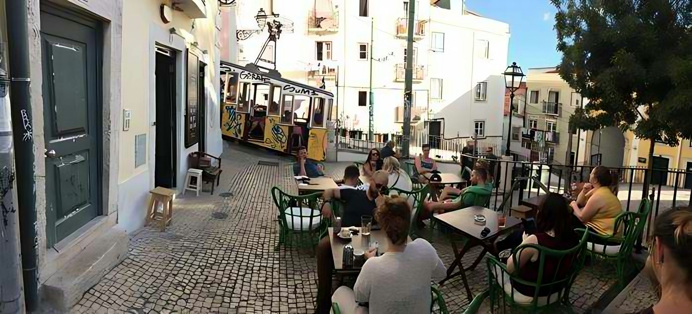
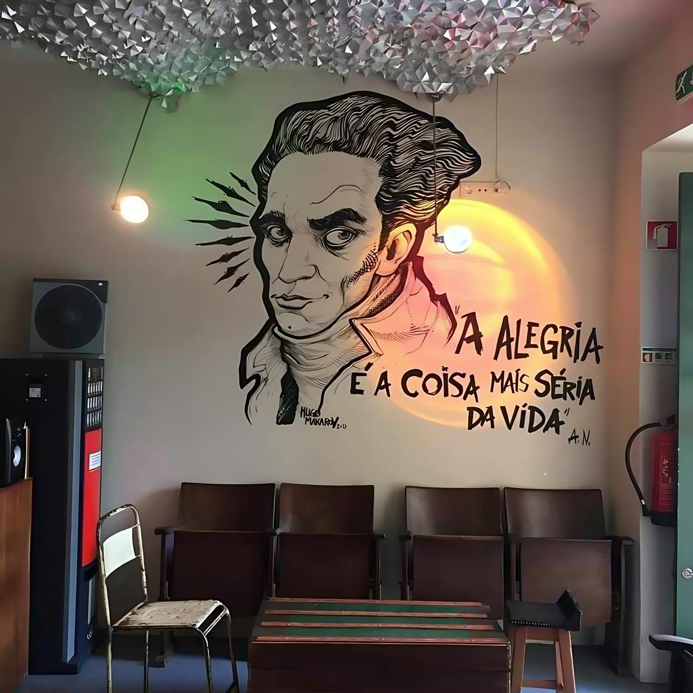
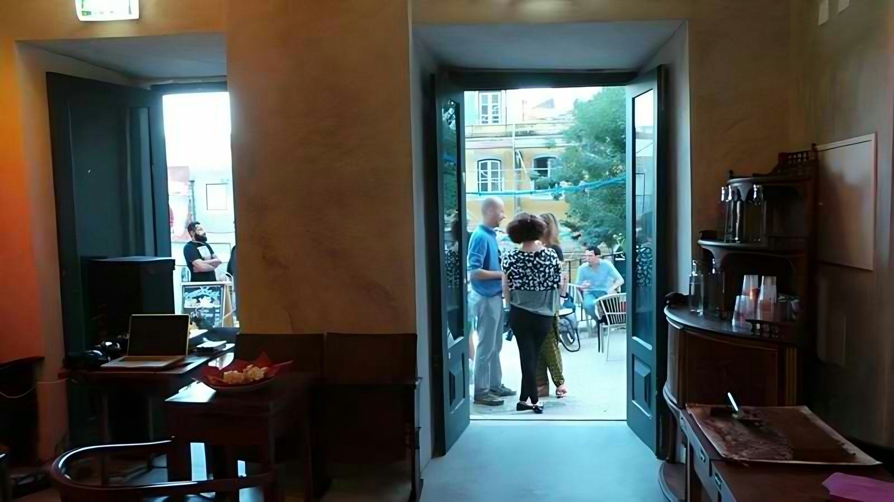
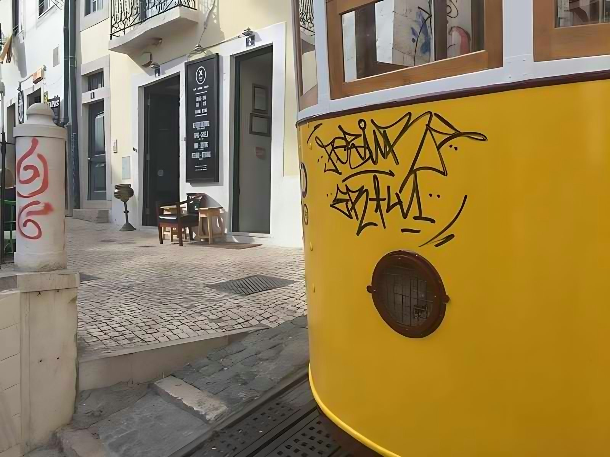
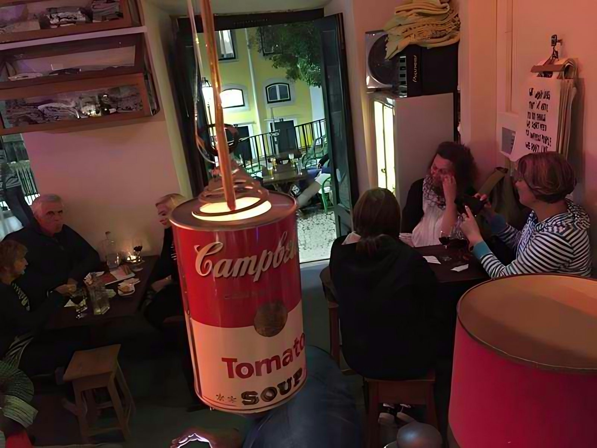
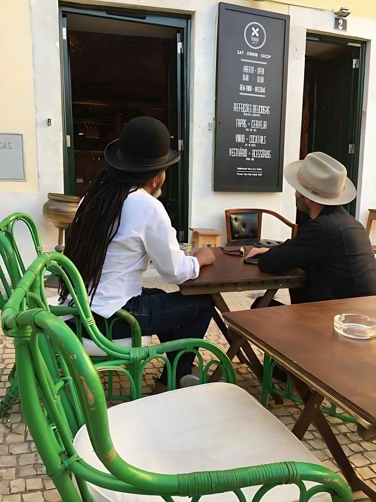
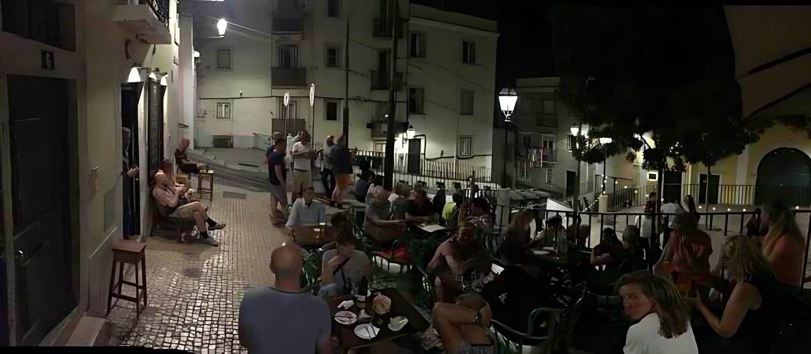

[ 06 / 14 ] · Bar de Tapas · Lisboa
O Larguinho
Conceito, menu de tapas e estratégia de abertura para um bar de bairro com esplanada na Alfama.
Serviços · 4/4 · 100%
- AConceito & Posicionamento
- BComida, Bebida & Experiência
- CEspaço, Configuração & Operações
- DEquipa, Lançamento & Consultoria







